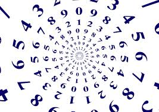

CODIFICHE
ASCII(tastiera)

(ASCII) è uno standard di codifica dei caratteri utilizzato nei computer e nei dispositivi elettronici per rappresentare il testo.
NUMERI

La codifica dei numeri è un processo utilizzato in informatica e matematica per rappresentare i numeri in vari formati, che possono essere compresi e manipolati dai computer.
Esistono diversi sistemi di codifica numerica, ognuno con caratteristiche specifiche e utilizzati in contesti diversi.per esempio il sistema binario o decimale
IMMAGINI

La codifica delle immagini si riferisce al processo attraverso il quale un'immagine viene trasformata in un formato che può essere facilmente memorizzato, trasmesso o elaborato da un computer.
che attraverso la rappresentazione di numeri che rappresentano i colori e le intensità di ciascun pixel.
AUDIO
La codifica dell'audio è il processo mediante il quale il suono, originariamente analogico (come il suono prodotto da una voce o uno strumento musicale),
viene trasformato in una forma digitale che può essere memorizzata, trasmessa e riprodotta dai dispositivi elettronici come computer, smartphone, e lettori multimediali.